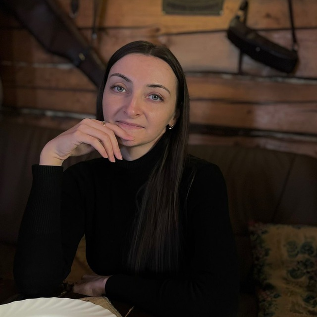
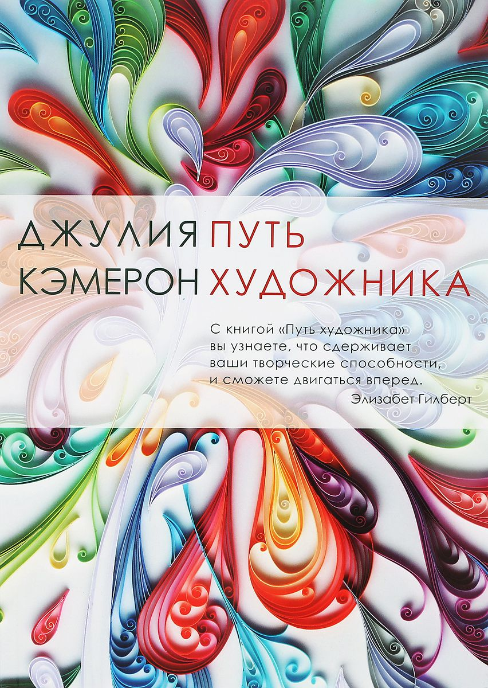

Добрый день! На этой web-странице я немного расскажу о себе.
Обо мне
Родилась и выросла я в Минске, где сейчас и проживаю. В 2014 году окончила БГЭУ по специальности "Банковское дело" и с тех пор работала в банке ВТБ (Беларусь). В какой-то момент поняла, что очень хочу изменить свою жизнь, в частности, попробовать сменить направление деятельности. Всегда с интересом "поглядывала" в сторону IT, но это казалось чем-то очень сложным, казалось, что я не справлюсь. Мнение моё поменялось, когда однажды я увидела статью на портале "Onliner" (ссылка на статью). Я подписалась на страничку школы в Instagram и около года наблюдала за её работой. И вот настал этот долгожданный момент - теперь я студентка Codegirl School:)
Мои увлечения
- прогулки на природе
- катание на велосипеде
- верховая езда
- готовка (под настроение:)
- интересуюсь и потихоньку изучаю фотографию
Одна из любимых книг
* Эту книгу я читаю сейчас.
Во вступлении приведена цитата Сергея Довлатова В любой работе есть место творчеству
, с чем я не могу не согласиться.